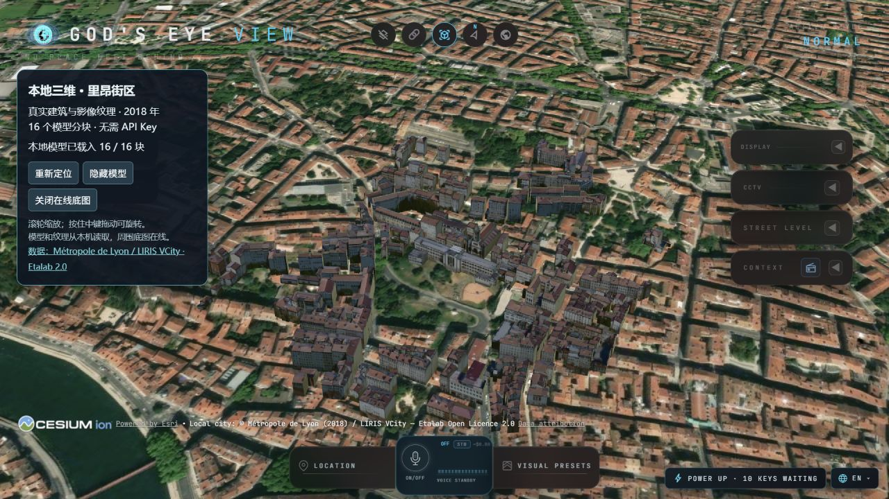

实机运行与模型实践记录
本文件保留 2026-10-20—21 的运行、截图与模型验证。当前研究主线见 项目首页和信息采集研究；模型实践作为历史验证保留。
将公开航班、卫星、地震、摄像头等数据叠加到三维地球。本次重点复现上游应用，记录无 API Key 模式的实际效果和数据可用性。
| 项目 | 内容 |
|---|---|
| 研究编号 | 006 |
| 上游仓库 | https://github.com/bilawalsidhu/gods-eye-view |
| 上游代码许可证 | MIT；第三方地图、数据、模型按各自许可证 |
| 研究版本 | 0.2.1 / 064d51f7be2675f1c69e16068e9c49d1a60144d1 |
| 验证日期 | 2026-10-21（Asia/Shanghai） |
| 状态 | 已完成本地复现；部分外部数据未验证 |
| 本地入口 | http://localhost:4173 |
本地运行
先克隆研究总仓库，在完整的 projects/006-gods-eye-view/ 目录内操作。静态研究页中的脚本链接用于查看源码；只下载一个 .cmd 文件缺少其依赖目录，不能直接复现。
Windows 双击 start.cmd，或在仓库根目录执行：
powershell -NoProfile -ExecutionPolicy Bypass -File projects/006-gods-eye-view/app/run.ps1 -OpenBrowser
首次运行需要 Git for Windows 和联网。脚本下载并校验独立的 Node.js 24.14.0，拉取固定上游版本、安装锁定依赖，再启动仅监听本机的 Vite 服务。关闭运行终端或按 Ctrl+C 停止。4173 被占用时可用 -Port 4174 指定其他端口。
无需 API Key 即可尝试基础地图和部分公开图层。Google 实景三维地图、船舶、AI 语音等功能需要相应服务配置；本项目新增的合肥、广州、里昂本地模型不需要 Key。可在上游应用的 Provider Settings 中自行添加凭据；不要将凭据提交到研究总仓库。
国内实景三维：合肥天鹅湖（2026-10-21）
已将带真实摄影纹理的合肥天鹅湖倾斜摄影模型下载并接入原应用。屋顶、建筑立面、道路、绿地和湖岸随三维网格保存；不是给广州体块换一套通用贴图。覆盖范围约 1.6 × 2.3 公里，为局部测试样例，非整座合肥。
服务启动后双击 open-hefei.cmd，或直接打开 合肥实景三维。本机已缓存 68 个 GLB 瓦片、68 张内嵌摄影纹理及全部索引，有效文件共 10,924,539 字节（约 10.9 MB）。无需注册或 API Key，重新打开从本机读取，不必重复下载模型。初始关闭在线底图，黑色区域是样例范围以外的背景；可点“显示在线底图”补充周边影像。

来源为 ICE 图形学社区公开列出的倾斜摄影测试数据。发布方提供免费测试入口，原始航测数据的商业使用、公开再分发许可证未核实；本次仅作本机研究体验，模型目录不提交 Git。样例纹理为 1024×1024 KTX2，近距离清晰度有限，采集日期未核实。
新机器先启动原应用，再执行 app/prepare-hefei.ps1。下载脚本缓存原始瓦片，校验全部文件哈希、模型依赖、内嵌纹理及材质引用；实际浏览器已验证冷启动、摄影近景、模型显隐和重新定位。详见 本地数据说明。
国内本地三维样例：广州（2026-10-21）
已将广州珠江新城附近约 3.6 × 3.6 公里的 2,251 个建筑体块接入原应用，实际加载 36 / 36 分块。来源为 guangzhou-3d 的开放城市数据库，地图数据 © OpenStreetMap 贡献者，采用 ODbL 1.0。数据与原始数据库、授权记录合计约 10.0 MB，保存在本机。
这是真实轮廓、部分估计高度的简化建筑模型，没有航拍立面纹理。样例没有导入上游程序化补全地块，不能等同于实景摄影城市。香港官方两个数据入口本次仍连接失败，详见 数据调查与复现说明。
服务启动后双击 open-guangzhou.cmd，或访问 广州模型视图。左侧可切换合肥、广州与里昂，也可关闭在线底图检查本地模型。新机器先执行 app/prepare-guangzhou.ps1。

本地实景三维样例（2026-10-21）
在原应用中新增了“本地三维 · 里昂街区”面板，加载免费开放的 2018 年真实建筑与影像纹理。数据来自 Métropole de Lyon / LIRIS VCity，使用 Etalab 2.0 许可。取 16 个分块保存在本机，不需要 Google 或 Cesium Token。
服务启动后双击 open-local-city.cmd，或访问 本地模型视图。
模型及纹理由本机读取，周围底图仍在线；模型只是小片街区，未覆盖整座城市。香港规划署模型的官方文件服务器本次连接失败，未接入；国内摄影模型现已采用上文的合肥天鹅湖样例。数据来源、下载与验证方法见 本地数据说明。
实际验证 16 / 16 分块成功加载，当前引用的数据与授权文件共 8,843,797 字节（约 8.8 MB）。模型显隐、重新定位、底图开关均已验证；高程未做精密基准转换，不用于测量。

关闭在线底图后，仍能看到独立的建筑几何和纹理：

实际效果与结论
2026-10-20 首次复现使用未修改的上游源码；2026-10-21 加入了可复现的本地模型扩展。


- 基础地球、Esri 影像、位置搜索与缩放可用，上海浦东机场影像成功加载。
- Austin 场景曾通过 adsb.lol 降级源加载 289 条区域航班记录，并显示飞机标记；当时部分上游请求超时，截图保留了失败提示。
- 随后 OpenSky 请求成功，返回 13,125 条全球记录；上海周边抽样区域（东经 120–123°、北纬 30–32.5°）该次返回 0 条，不能据此保证国内实时航班覆盖。左侧 13.0K 是全球数量。
- 上游默认无 Key 模式显示的是基础地球和影像，不是 Google 实景三维城市；新增的本地模型独立加载。影像内飞机、车辆属于拍摄时的画面；战术 HUD 与“TOP SECRET”等字样是界面效果，不代表实时侦察能力。
- 中国境内船舶和摄像头数据尚未验证。本次未配置 AISStream 等凭据，也没有证明存在国内摄像头通用公开接口。
本地启动成功不等于外部服务始终可达，也不代表所有大陆网络环境均可访问。详细证据见 研究记录。
文件组织
app/upstream.lock.json：固定上游 Commit、Node 版本与安装包校验值。app/setup.ps1、app/run.ps1：可复现的安装、启动入口。app/prepare-hefei.ps1、app/check-hefei.py：缓存并检查合肥实景摄影模型。app/prepare-guangzhou.ps1、app/prepare-local-city.ps1：准备广州简化建筑、里昂纹理模型。app/upstream/：本地上游源码及依赖，已忽略；保留上游原始许可证。app/.runtime/、app/.logs/：本地运行环境及日志，已忽略。assets/：本机实际运行截图和验证证据。- notes.md：验证过程、数据状态与限制。
来源与授权
上游代码：MIT License。地图、三维模型、实时和内置数据均有独立授权要求，详见上游 DATA_SOURCES.md。本项目不将上游应用直接导出为 GitHub Pages 静态站点，因为完整功能依赖本地服务端接口。